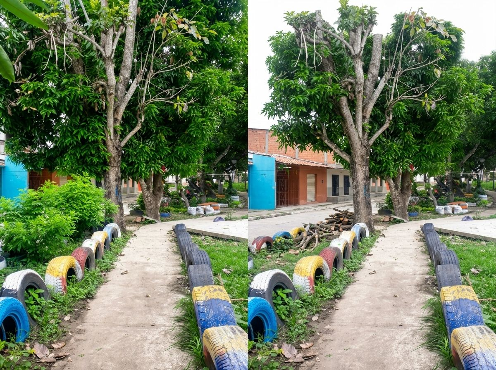
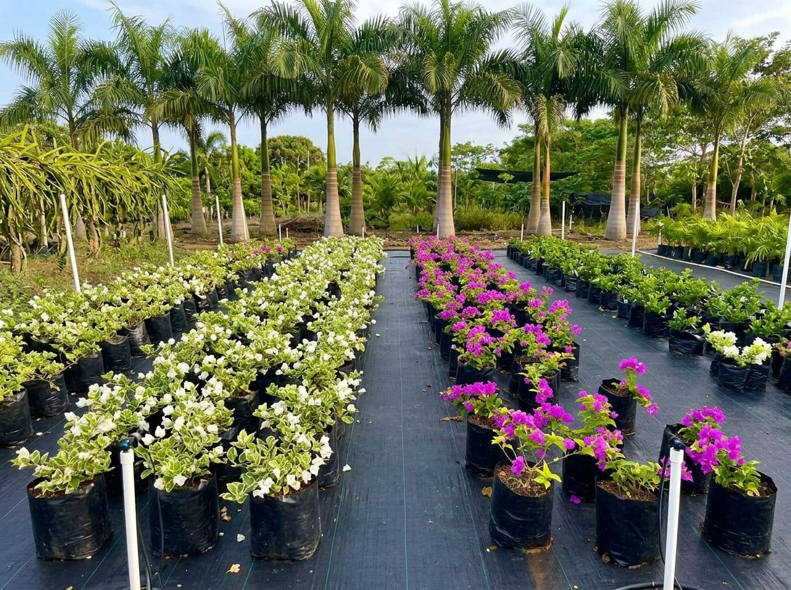

Jardinería
Diseño, instalación, mantenimiento, césped, decoración de exteriores y asesoría técnica.
Línea Ambiental · Sincelejo, Sucre
Diseño, mantenimiento y recuperación de zonas verdes, poda técnica del arbolado y suministro de material vegetal.
Visita técnica y cotización sin costo · Sin compromiso

Nuestra línea ambiental
SERVIOFICIOS Y SUMINISTROS SAS integra asesoría, ejecución y suministro para atender necesidades de jardinería, manejo del arbolado y material vegetal.
La propuesta está dirigida a hogares, empresas e instituciones públicas y privadas.
Diseño, instalación, mantenimiento, césped, decoración de exteriores y asesoría técnica.
Poda de formación, mantenimiento y sanitaria; tala selectiva y manejo técnico del arbolado.
Material maderable, frutal y ornamental, además de abonos e insumos para jardinería.
Servicios
Explora cada servicio y descubre el alcance descrito en nuestro portafolio ambiental.
Planificación y ejecución de jardines ornamentales y productivos, mantenimiento de zonas verdes, renovación de césped, decoración de exteriores y asesoría técnica.

Poda de formación y mantenimiento, poda sanitaria y de altura, tala selectiva y tala rasa, tratamiento fitosanitario y gestión de residuos vegetales.

Suministro de plantas maderables, frutales y ornamentales, junto con abonos orgánicos e insumos para jardinería y entrega coordinada según tipo, cantidad y ubicación.


Suministro de material vegetal
También ofrecemos abonos orgánicos, insumos para jardinería y entrega coordinada según tipo, cantidad y ubicación del proyecto.
Por qué elegirnos
Matriculada ante la Cámara de Comercio de Sincelejo, Matrícula No. 94175.
Asesoría, ejecución y suministro de material con un solo responsable.
En las intervenciones de poda y tala incluimos la gestión de los residuos vegetales.
Propuestas ajustadas a las necesidades y presupuesto de cada cliente.
Hablemos de tu proyecto
Podemos orientar la propuesta hacia jardinería, poda y tala, material vegetal o una combinación de servicios.
Completa el formulario y abriremos WhatsApp con tu solicitud ya lista para enviar.